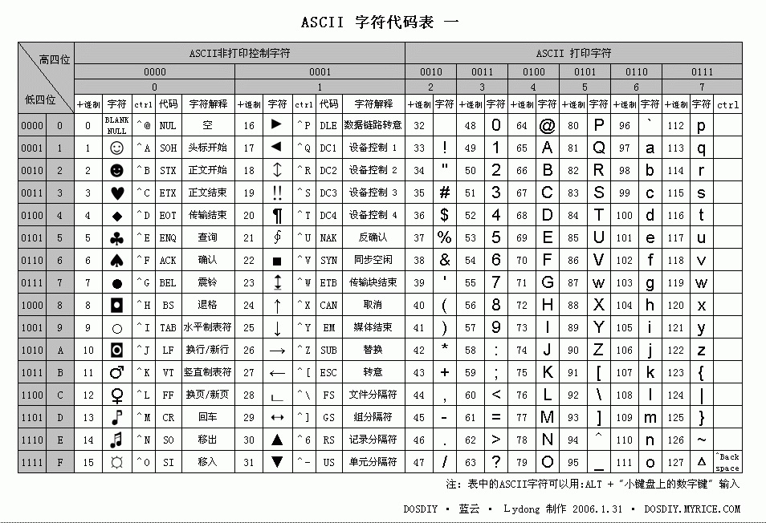

#10 Python字符串
通过上一节可知，Python6个序列的内置类型中，最常见的是列表和元组,但在Python中，最常用的数据类型却不是列表和元组，而是字符串。要想深入了解字符串，必须先掌握字符编码问题。因此本篇博文将讲解Python字符编码问题和Python字符串的具体方法！
一、Python字符编码
前提：计算机只认识两个数字：0和1，计算机在处理任何数据时，都要将数据转换为这两个数字的组合。
1.计算机的单位制
计算机在设计时，最小单位是 位（bit） ，位里面只能有两种情况，0或者1。位太过单调，只有两种情况，显然无法处理数据，所以引入 字节（byte） ，1字节=8位（1B = 8b），也就是说计算机一次能处理8位数据，早期的计算机都是8位的，现在的计算机有32位的，有64位的，显然现在的计算机相比以前运算能力大大提高。1字节能表示的最大整数为255（二进制1111 1111 = 十进制255）。对于存储介质来说，1个字节存储能力显然太弱，于是就有了KB、MB、GB、TB、PB、EB、ZB、YB、BB、NB、DB.....的出现：
1TB=1024GB 1GB=1024MB 1MB=1024KB 1KB=1024B 1B=8b
2.ASC码
由于计算机无法识别人类使用的语言，所以聪明的人类创造了一种映射关系，即让某一个数字映射到人类语言的某一个字符，比如：1---> A，这样计算机就可以识别人类语言了。因为第一台计算机是在美国诞生的，最早美国人只将常用的符号、大写英文和小写英文共127个字符编码映射到计算机中，这个编码表就是著名的ASC编码表，这个ASC码表最多只有8位，也就是说最多只能表示255个字符。

3.GB2312
后来计算机推向全球，中国人也要使用，但是早期的电脑里只有ASC码，中国人肯定不乐意啊，我大中华几千年的优秀文化，最牛的就是汉字了！然而汉字有好多啊，可不止255个，就算把ASC码表重新编一次，也不够用啊，再说，ASC码表谁也不能重新编人家，那怎么办呢？聪明的中国程序员对汉字进行了分区，分为94个区，每个区里有94个汉字。查找汉字时，找到它所在的区，再找到它所在区的哪个位置，就对一个汉字精确定位了，所以GB2312又称为区位码。GB2312中共收录6763个汉字，其中一级汉字3755个，二级汉字3008个，同时收录了包括拉丁字母、希腊字母、日文平假名及片假名字母、俄语西里尔字母在内的682个字符。
4.GBK
后来，中国人又出现了新问题，GB2312支持的汉字太少了，随着国人人取名字越来越奇葩，GB23132根本就无法处理，于是GBK就应运而生了。GBK支持的字符那是相当的多，现在中国计算机使用的依旧是GBK，不信你可以验证一下，再Windows下的命令行里输入 chcp ，应该会显示Active code page：936 ，这个936就代表GBk。
5.Unicode
随着计算机在各国的普及，每个国家都有自己独特的编码方式，就出现了新的问题，日本人开发的软件在中国的计算机上运行的时候，会出现乱码，这样就会造成沟通障碍，为了解决类似问题，国际上的计算机头头组织决定让全世界的编码统一，于是Unicode就出现了，Unicode规定每个字符最少用16位表示。成功统一的编码，这就时Unicode。
6.UTF-8
Unicode的出现，几家欢喜几家愁啊，中国人觉得海星，美国人不乐意了，原来我的所有字符都是用8位（1字节）表示，现在莫名其妙就要用16位（2字节）表示，本来1GB的文件，现在变成2GB了，搁谁也受不了啊！那怎么办呢？于是UTF-8便出现了，UTF-8是对Unicode的压缩和优化，UTF-8不再规定必须最少用2个字节了，而是将字符进行分类：ASC码中的字符还是 1字节，欧洲使用2字节，东亚使用3字节。Perfect~~
7.Python3字符编码
在Python3中，默认的字符编码是Unicode。
二、Python字符串
介绍完了字符编码的知识就该进入正题了，字符串作为Python最常用的数据类型，那一定有它独特的魅力，盘它！
先来看看字符串的具体方法：
1 | In [1]: dir(str) |
从上面可以看到，字符串的方法那是超级多啊⊙﹏⊙∥
注意：字符串同元组一样，其内部元素不可以被修改
1.初始化字符串
1 | In [2]: name = 'MinuteSheep' # 单引号 |
2.字符串索引
通过索引访问字符串元素：同列表用法一样 1
2
3
4
5
6
7
8
9
10
11
12
13In [19]: name = 'MinuteSheep'
In [20]: name[0] # 同列表用法一样
Out[20]: 'M'
In [21]: name[5]
Out[21]: 'e'
In [22]: name[-1]
Out[22]: 'p'
In [23]: name[-6]
Out[23]: 'e'
通过元素获取索引：有两种方法：str.index() , str.find() 1
2
3
4
5
6
7
8
9
10
11
12
13
14
15
16
17
18
19
20
21
22
23
24
25
26
27
28
29
30In [24]: name = 'MinuteSheep'
In [25]: name.index('S') # 查找一个字符在字符串中的索引
Out[25]: 6
In [26]: name.index('te') # 查找子字符串在字符串中的索引，如果有多个子字符串，则返回第一个的索引
Out[26]: 4
In [31]: name.index('te',3,9) # 可以指定查找范围：第3个字符到第9个字符
Out[31]: 4
In [27]: name.index('Sp') # 当查找的字符或字符串不存在时，抛出没找到的异常
---------------------------------------------------------------------------
ValueError Traceback (most recent call last)
<ipython-input-27-1d8e59855f71> in <module>
----> 1 name.index('Sp')
ValueError: substring not found
In [28]: name.find('S') # 用法和str.index()类似
Out[28]: 6
In [29]: name.find('te') # 用法和str.index()类似
Out[29]: 4
In [32]: name.find('te',3,9) # 用法和str.index()类似
Out[32]: 4
In [30]: name.find('Sp') # 当查找的字符或字符串不存在时，返回-1，就这点不一样
Out[30]: -1
3.字符串切片
使用方法同列表一样
1 | In [34]: name = 'MinuteSheep' |
4.字符串组合
字符串相加：直接用 + 号将两个字符串加起来，效果如下： 1
2
3
4
5
6In [40]: name1 = 'MinuteSheep'
In [41]: name2 = 'Heenoor'
In [42]: name1 + name2
Out[42]: 'MinuteSheepHeenoor'
字符串拼接： 1
2
3
4
5
6
7
8In [51]: '-'.join('MinuteSheep') # 将字符串的每个字符用 - 拼接起来
Out[51]: 'M-i-n-u-t-e-S-h-e-e-p'
In [53]: '-'.join(['MinuteSheep','Heenoor']) # 将列表的每个元素用 - 拼接起来
Out[53]: 'MinuteSheep-Heenoor'
In [55]: '-'.join({'a':3,'b':5}) # 将字典的key值用 - 拼接起来
Out[55]: 'a-b'
字符串居中： 1
2
3
4In [56]: name = 'MinuteSheep'
In [58]: name.center(20,'*') # 使用str.center(数量,符号)方法将字符串居中
Out[58]: '****MinuteSheep*****'
字符串乘法：同列表一样 1
2In [60]: 'MinuteSheep' * 5
Out[60]: 'MinuteSheepMinuteSheepMinuteSheepMinuteSheepMinuteSheep'
5.字符串统计
统计字符串长度：使用len()查看： 1
2
3
4
5In [61]: name
Out[61]: 'MinuteSheep'
In [62]: len(name)
Out[62]: 11
统计指定字符出现次数：使用str.count()方法： 1
2
3
4
5In [61]: name
Out[61]: 'MinuteSheep'
In [63]: name.count('e')
Out[63]: 3
6.字符串转义
在Python中，有些字符被转义了，通常字符前面有 代表转义字符，比如 '' 代表换行符，其他的转义字符见下表：
1 | \(在行尾时) # 续行符 |
如果字符串需要这些字符又该怎么办呢，比如 s = '\n' ,运行代码后Python就会将 识别为换行，如果字符串需要出现 ，那就再转义即可，如 s = '\\n'
1 | In [73]: s = '\n' |
但如果一个字符串中转义符过多的话，想要同时让这些转义符出现再字符串中，那岂不是要一个一个再转义，其实，Python中有一个简单的方法，那就是再创建的字符串前面加一个 r 或者 R ，例如：
1 | In [78]: s = r'\n' |
7.字符串格式化
字符串的格式化可以说是一种动态编程，相当于创建一个模板，填写内容即可，例如：你好，我叫XXX，我今年XXX岁了，我的电话号码是XXX。盘它！
使用 % ：
1 | In [82]: name = 'MinuteSheep' |
以上代码就做到了一个动态编程，用%s占位，之后用其他内容替换它。
其实，在Python中，%s属于字符串占位符，还有其他的占位符：
1 | %c # 格式化字符及其ASCII码 |
其中，%d 和 %f 可以指定整数与小数的位数：
1 | In [87]: '%2d' % 345 |
使用 format ：
Python中还有另外一种字符串格式化方法 format，这也是Python官方建议的方式 1
2
3
4
5
6
7
8
9
10
11
12
13
14
15
16In [92]: 'I am {0} you are {1} he is {2}'.format('A','B','C')
Out[92]: 'I am A you are B he is C'
In [93]: 'I am {0} you are {0} he is {2}'.format('A','B','C')
Out[93]: 'I am A you are A he is C'
In [94]: 'I am {2} you are {0} he is {1}'.format('A','B','C')
Out[94]: 'I am C you are A he is B'
In [96]: 'I am {name1} you are {name2} he is {name3}'.format(name1='A',name2='B',name3='C')
Out[96]: 'I am A you are B he is C'
In [97]: 'I am {name1} you are {name2} he is {name3}'.format(name3='A',name2='B',name1='C')
Out[97]: 'I am C you are B he is A'
# 懂了哇，弟弟们
8.字符串编码转换
上面说了一长串的编码，到这里来实际操作一下
使用 str.encode(编码方式) 进行编码：
1 | In [98]: name_unicode = '小绵羊' |
使用 bytes.decode(当前字符串编码) 解码成 unicode： 1
2
3
4
5In [105]: name_utf8.decode('utf8') # 将utf8解码为unicode，括号里默认为utf8，可以省略不写
Out[105]: '小绵羊'
In [106]: name_gbk.decode('gbk') # 将gbk解码为unicode
Out[106]: '小绵羊'
9.字符串判断方法集合
如果仔细去看字符串的方法，发现有好多is开头的方法，这些方法其实都是判断方法，一起来看看哇：
1 | In [107]: name = 'MinuteSheep' |
还有两个很重要的判断方法：
1 | In [117]: name |
10.字符串其他方法
1 | In [123]: name = 'minutesheep' |
至此，Python字符串方法全部记录完，卒